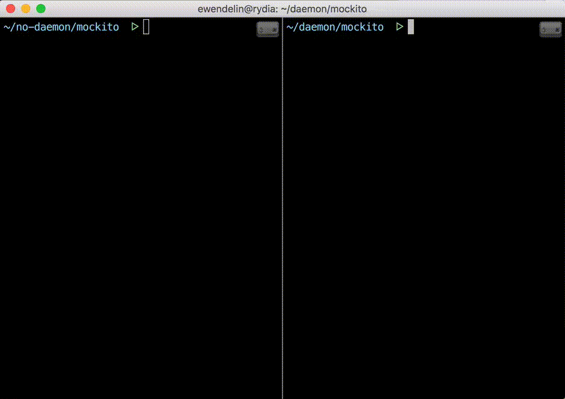
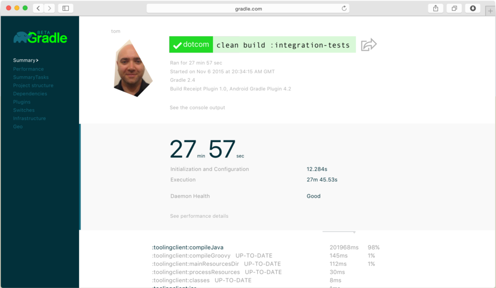
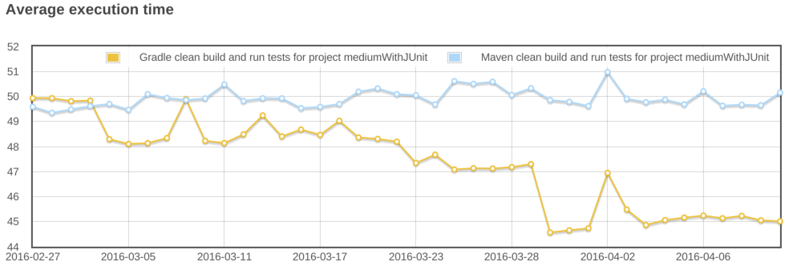

speaker {
name 'Cédric Champeau'
company 'Gradle Inc'
oss 'Apache Groovy committer',
successes 'Static type checker',
'Static compilation',
'Traits',
'Markup template engine',
'DSLs'
failures Stream.of(bugs),
twitter '@CedricChampeau',
github 'melix',
extraDescription '''Groovy in Action 2 co-author
Misc OSS contribs (Gradle plugins, deck2pdf, jlangdetect, ...)'''
}FinistJUG
Extremely fast builds with Gradle 3
Cédric Champeau
Cédric Champeau
2016
Who am I

Agenda
The Gradle Daemon
Profiling
Incremental builds
Incremental compilation
Continuous builds
Composite builds
Task output cache
What is Gradle?
A build tool
Cloud Services
The Gradle daemon
Long-lived background process
Listens and executes build actions
Faster startup / execution
Enabled by default since 3.0
The Gradle daemon
Cold daemon
Warm daemon

Profiling a build
gradle --profile
Generates a report in the build directory
Limited insight
Not easily shareable
But can already give precious information
Build scans
|  |
Build scan demo
Creating a build scan
Apply the build scan plugin
plugins {
id 'com.gradle.build-scan' version '1.0'
}
buildScan {
licenseAgreementUrl = 'https://gradle.com/terms-of-service'
licenseAgree = 'yes'
}Run the build
./gradlew -Dscan buildClick on the link
:jrubyPrepareGems
:asciidoctor UP-TO-DATE
BUILD SUCCESSFUL
Total time: 1.132 secs
Publishing build information...
https://gradle.com/s/v2f5knnujnsx2Incremental builds
Gradle is meant for incremental builds
cleanis a waste of timePrepare your builds for incrementalness
Example: building a shaded jar
task shadedJar(type: ShadedJar) {
jarFile = file("$buildDir/libs/shaded.jar")
classpath = configurations.runtime
mapping = ['org.apache': 'shaded.org.apache']
}What are the task inputs?
What are the task outputs?
What if one of them changes?
Declaring inputs
@InputFiles
FileCollection getClasspath() { ... }
@Input
Map<String, String> getMapping() { ... }Declaring outputs
@OutputFile
File getJarFile() { ... }Incremental compilation
Given a set of source files
Only compile the files which have changed…
and their dependencies
Language specific
Gradle has support for incremental compilation of Java
compileJava {
//enable incremental compilation
options.incremental = true
}Continuous builds
Gradle watches for changes in task inputs
Re-executes tasks as changes occur
Enabled with
-t
gradle -t asciidoctorComposite builds
Compose various projects as if there were one
Each project can live in its own repository
Each project has its own Gradle build
Composition unites them through dependency resolution
Split monolithic projects
For large multiproject builds, allows splitting them into several pieces
Each piece can be versioned independently
Developers can choose what subprojects they care about
Composite builds demo
Task output cache
Avoid doing work even after clean
Share binaries between projects on a single machine
Share binaries between projects on a network
Backend agnostic
Task output cache use cases
Long compile tasks
Bisecting
Continuous integration
Green earth
Task output cache demo
With composite builds!
Performance guide

Thank you!
Slides and code : https://github.com/melix/finistjug-fast-builds
Gradle documentation : http://gradle.org/documentation/
Follow me: @CedricChampeau
Learn more at www.gradle.org